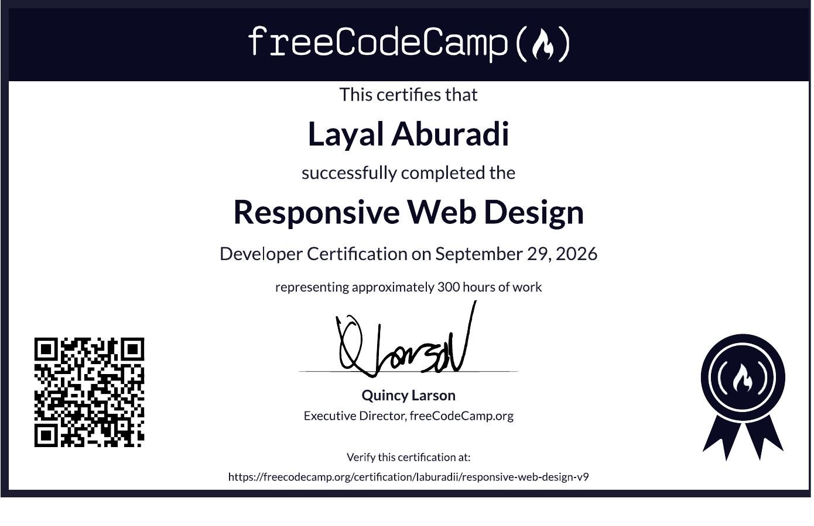
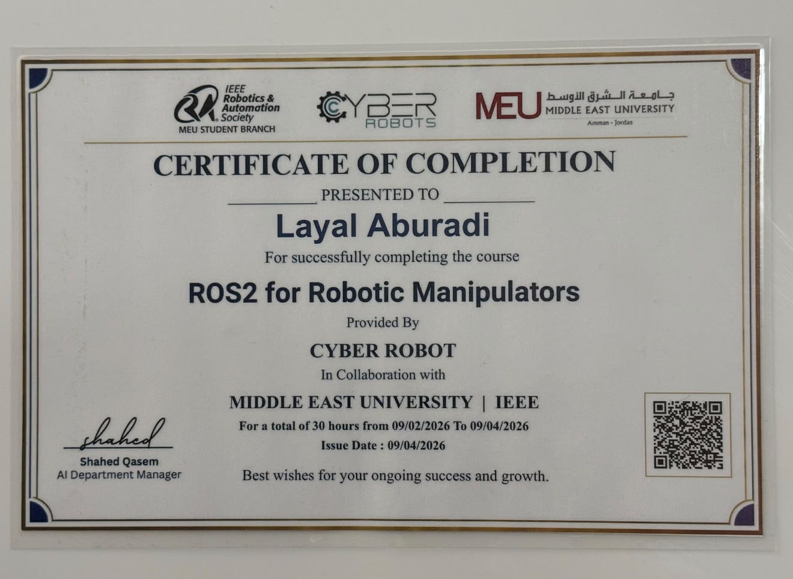
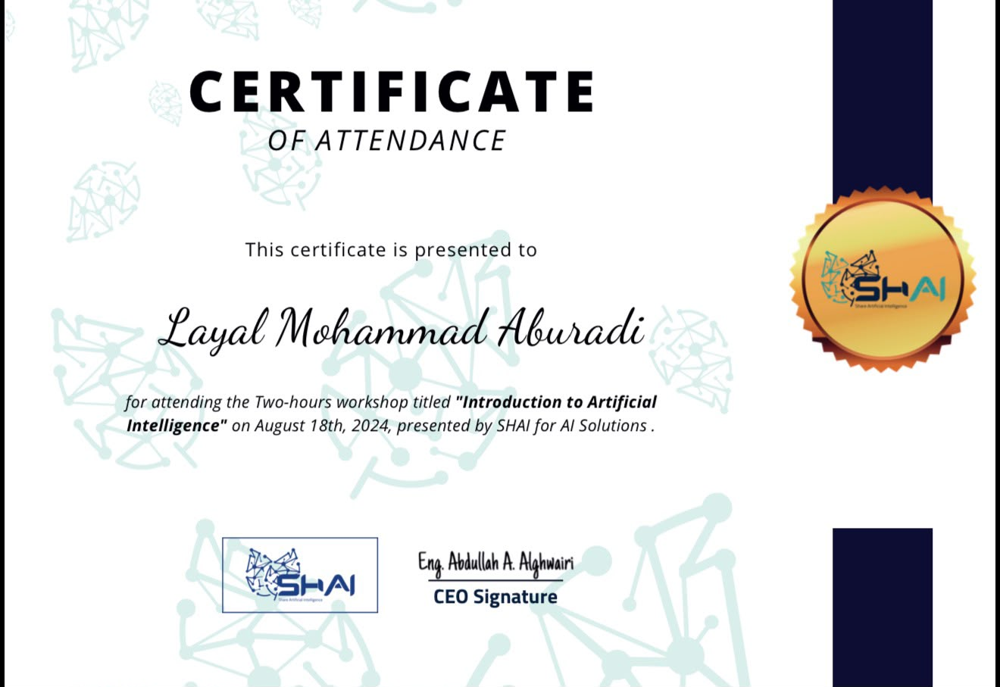
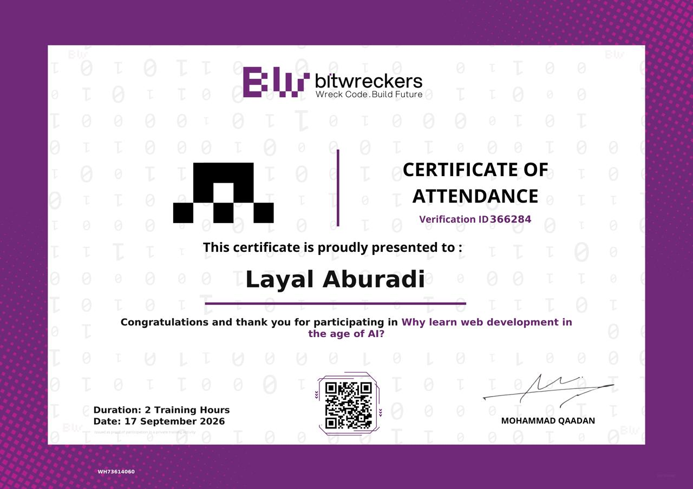

C++
Programming language
WELCOME TO MY PORTFOLIO
Layal Mohammad Samir Aburadi
Middle East University
const developer = {
name: 'Layal Aburadi',
focus: 'Computer Science',
mindset: 'Always learning',
interests: [
'AI',
'Cybersecurity',
'Web Development'
]
};
// One idea. One line. One step forward.
C++ ✦ C# ✦ JavaScript ✦ HTML & CSS ✦ OOP
01 / THE PERSON BEHIND THE CODE
I’m Layal Mohammad Samir Aburadi, a Computer Science student at Middle East University in Amman, Jordan. I’m developing my technical and professional skills through study, training, and practical exploration.
My learning journey connects programming and web development with cybersecurity, machine learning, and robotics. I enjoy understanding how things work and turning that understanding into thoughtful solutions.
02 / MY TOOLKIT
The languages and tools behind my learning journey.
Programming language
Programming language
Programming language
Object-oriented programming
Web & programming
Web structure
Web styling
Database queries
Database tools
Code editor
Development environment
Code collaboration
03 / EXPLORING THROUGH CODE
MY CODE & LEARNING
Explore my GitHub profile for the code and repositories I share as I develop my skills in programming and web development.
04 / EDUCATION & JOURNEY
Building a strong academic foundation, with new perspectives along the way.
Middle East University · Amman, Jordan
Undergraduate StudiesIntroduction to Artificial Intelligence workshop · SHAI for AI Solutions
Unsupervised Machine Learning · IEEE Computational Intelligence Society, Middle East University
Developer certification · freeCodeCamp
CONTINUOUS LEARNING
Courses, certifications, training programs, workshops, and learning activities.

freeCodeCamp
September 29, 2026 · Approximately 300 hours

Green Circle for Software Solutions
Cybersecurity concepts and fundamentals

Green Circle for Software Solutions
30 training hours

IEEE Computational Intelligence Society · Middle East University
15 training hours · May–June 2026

Cyber Robot · Middle East University · IEEE
30 training hours

SHAI for AI Solutions
August 18, 2024 · 2 hours

Bitwreckers
September 17, 2026 · 2 hours
LET’S CONNECT
I’m interested in learning opportunities, software development internships, and connecting with people who share a curiosity for technology.